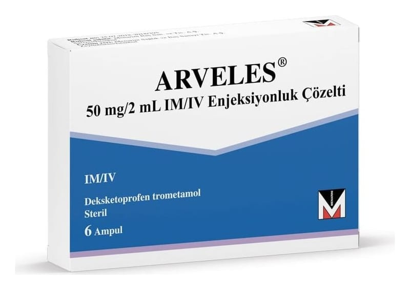

Arveles 50 mg/2 ml IM/IV Enjeksiyonluk Çözelti, 6 Ampul

Ne için kullanılır
KT · Bölüm 1ARVELES, steroidal olmayan antiinflamatuvar ilaçlar (NSAİİ’ler) (iltihap giderici) olarak adlandırılan ilaç grubundan bir ağrı kesicidir.
Osteoartrit (eklemlerde harabiyet ve kireçlenme), romatoid artrit (iltihabi eklem rahatsızlığı) ve ankilozan spondilit (daha çok omurga eklemlerinde sertleşme ile seyreden, ağrılı ilerleyici romatizma) belirti ve bulgularının tedavisi ile akut gut artriti (gut hastalığına bağlı ağrılı eklem iltihabı), akut kas iskelet sistemi ağrıları (örn. bel ağrısı), postoperatif ağrı (ameliyat sonrası ağrı), dismenore (ağrılı adet dönemleri) ve renal kolik (şiddetli böbrek ağrısı) tedavisinde kullanılır.
ARVELES 50 mg deksketoprofen (trometamol) içerir ve herbiri 2 mL berrak ve renksiz çözelti içeren 6, 10 ve 20 ampullük ambalajlar halinde mevcuttur.